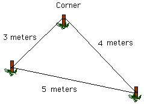

Ravindu Nethsara
10 June 2022

ඔබට ඇණ කිහිපයක්, නූල් බෝලයක් සහා ටේප් පටියක් සපයා ඇතැයි සිතන්න. මේ ද්රව්ය පමණක් භාවිතා කර අංශක 90 ක කෝණයක් පොළොව මත නිර්මාණය කර පෙන්නන ලෙසට කෙනෙක් ඔබට පැවසුවොත් ඔබ සාර්ථක වේවි ද? ඔව් ඇතැම් සුළු පිරිසක් පමණක් එය සිදුකරයි. නමුත් බොහෝ දෙනෙක් එම කාර්යය කිරීමට අපොහොසත් වෙයි. සමහරෙක් සිතාවි මෙය බොළඳ ක්රියාවක් බව. නමුත් මෙම ක්රියාකාරකම නිසි ලෙස කිරීමට නොහැකි වීමට බලපාන හේතුව, වර්තමානයේ සමාජීය, තාක්ෂණික, ආර්ථිකමය මෙන්ම දේශපාලනික බොහෝ ගැටළු වලට වලට මුල් වී ඇත.
සිධාන්තමය විසඳුම
අපි මුලින්ම ඉහත ගැටළුව විසඳීමට උත්සාහා කරමු. කොහොමද අංශක 90 කෝණයක් නිර්මාණය කරන්නේ? මොකක්ද ඊට අදාළ සිද්ධාන්තය? අපිට මේ සඳහා පෛතගරස් ප්රමේයය යොදාගත හැකියි. ඉතින් සහෘදයිනි ඔබ මා හොඳින්ම දන්නා ප්රමේයක් යොදගෙන මෙය විසඳිය හැකිය. ප්රථමව පෛතගරස් ප්රමේයය තෘප්ත කරන සම්බන්ධයක් තෝරා ගැනීමට ඔබට නිදහස තිබේ.උදාහරණ ලෙස, 32 + 42 = 52;
62 + 82 = 102;
52 + 122 = 132;
ආදී ලෙස ඔබට කැමති සම්බන්ධයක් තොරා ගන්න. මම පළමුවන සම්බන්ධය තොරගන්නම්.
32 + 42= 52;
මීට අදාළ ත්රිකෝණය නිර්මාණය කළ විට අපිට අංශක 90ක කෝණයක් නිර්මාණය කරගත හැකිය. ගැටළුවේ
සිද්ධාන්තමය පැතිකඩ දැන් අපි විසඳා අවසන්.
ක්රියාකාරකම
අපි දැන් විමසා බලමු මෙහි ප්රායෝගික කොටස විසඳන ආකාරය. ප්රායෝගිකව මෙය විසඳීමේදී කරුණු රැසක් පිළිබඳ අපි සිතිය යුතුය. මුලින්ම එක් ඇණයක් නූල ගැටගසන්න හැකි ලෙස පොළොවෙන් ඉහළට තිබෙන පරිදි සවිකරන්න. එහි නූල ගැට ගසා ටේප් පටියෙන් මීටර් තුනක් මැන කෙළවර ඇණය ගැට ගසා එය පොළොවේ සවිකරන්න. අපි දැන් සාර්ථකව එක් පාදයක් නිර්මාණය කරා. එම සවි කළ ඇණ දෙකේ තවත් නූල් කැබලි දෙකක් ගැට ගසා ඒවයේ දිගවල් මීටර් 4ක් සහා මීටර් 5 ක් මැන සලකුණු කර එම සලකුණු කළ දිගවල් හමුවන තැන නූල් කැබලි දෙකම ඇණයකට ගැට ගසා පොළොවේ සවිකරන්න.එවිට අපිට ඍජුකෝණි ත්රිකෝණයක් ලැබේ. එනම් අපි අංශක 90 කෝණයක් නිර්මාණය කරා. ඉතින් සහෘදයිනි ඇයි මෙය විසඳීමට අපහසු? උගත් සිද්ධාන්තමය දැනුම ප්රායෝගිකව භාවිතා කිරීමට ඉගෙනුම් ඉගැන්වීම් තුළ අවස්ථාවක් නැතිකම මෙයට මූලික හේතුව වේ. නමුත් සහෘදයිනි ඉගැන්වීම් ක්රියාවලිය තුළ ඇති ප්රශ්න කතාකිරීම නොව විය යුත්තේ එය තුලින් තමා සොයන දැනුම නොලැබේ නම් තමා විසින්ම ස්වයං අධ්යනය මඟින් සොයා ගැනීමට යොමු වීම ඔබේ වගකීමක් වේ. එය ඉතා වැදගත්ය.
ගණිතය, විද්යාව, දර්ශනවාදය, ආර්ථික විද්යාව, දේශපාලනය ආදී සංකල්ප සමාජගත කිරීමට ඔබත් කැමති නම් මෙහි පළ කිරීමට ඔබටත් අවසතාව ඇත. අවසාන වශයෙන් ඔබ ඔබම වෙන්න; දැනුම සොයන්න; රටක් ලෙස නැඟිටීමට එකතුවන්න. ප්රශ්න ගැන කතා නොකර ඒවාට විසඳුම් ඉදිරිපත් කිරීමට දක්ෂ වෙමු.
ස්තුතියි. ~පහත ගැටළුව විසඳීමට උත්සහා කරන්න.~